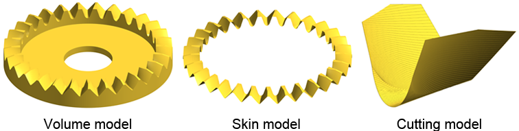

|
|
|


生成三维模型
此处用于修改生成 3D 模型的参数。
- 在“模型类型”下，指定要生成的模型类型（体积模型、表层模型、切削模型）。体积模型可用于其他应用，如通过 CNC 进行机械加工或有限元分析。表层模型最适合于接触分析。切削模型仅适用于使用切削模拟的齿轮模型，如端面齿轮和包络蜗杆齿轮，并用于查看实际的切削模拟。

- 切削步骤数 设置切削过程中的每半节距切削次数。最小值为 1，默认值为 20。通过增加切削步骤数可以提高最终模型的质量，但这也增加了制造误差的可能性。"比例因子"用于解决失效问题。如果操作失败，我们建议使用较少的生成步骤并增大比例因子。
- 齿宽方向上的节段数 定义了沿齿宽方向用于近似齿面型式的节段数量。最小值为2，默认值为11。通常情况下，通过增加此值可以提高最终模型的质量，但不建议设置相对于齿宽过高的数值。该系数用于具有切削模拟的齿轮模型和具有多个横截面的齿轮模型，例如弧齿锥齿轮和具有齿向修形的圆柱齿轮。
- 生成3D模型 切削模型的缩放因子 用于在切削模拟过程中对模型进行缩放。最小值为1，默认值为10。有时由于内部操作错误，切削模拟可能在Parasolid内核中失败，尤其是在模型具有非常小的模数和/或大量生成步骤时。为了防止此类操作错误，应在切削过程中使用由比例因子设定尺寸的模型。因此，切削模型的尺寸可能与实际设计不同。然而，体积模型和表层模型在操作后会自动恢复其原始比例（尺寸），因此与输入的齿轮具有相同的尺寸。
- "建模操作公差"设置 Parasolid 内核的内部操作容差，例如在布尔运算中的弦近似和碰撞检测。默认值为 1 μm。
- 生成3D模型 渲染质量 设置3D几何视图中结果图形的分辨率。此设置仅用于提高查看器的显示效果（可操作性），不影响生成模型的质量。如果查看器中的旋转操作速度慢，可以增加质量值以加快操作速度。默认值为5 μm。
- 点击 齿宽方向上根圆半径恒定 指定锥齿轮齿根圆角半径的生成方法。锥齿轮的齿根圆角半径沿齿宽方向随法向模数变化。如果选中此复选框，则在中间截面中使用由法向模数定义的恒定齿根圆角半径。（适用于锥齿轮）
- 沿齿宽的恒定凸角值 设置锥齿轮基准齿廓的凸角。锥齿轮的基准齿廓的凸角沿齿宽方向随法向模数变化。如果选中此复选框，则在中间截面中使用由法向模数定义的恒定凸角。（适用于锥齿轮）
- 如果选择 显示外部和内部的 2D 几何模型，则内、外两侧的齿形将表示为 2D 图形。（适用于锥齿轮）
- 如果选择 在已保存位置生成齿系统模型，系统模型将在已保存的位置生成。该位置保存在计算文件中，以后可恢复接触印痕的检查位置。(适用于锥齿轮)
- 点击 切割边样条近似点数 以指定每条边上用于近似根部区域或齿面样条曲线的建模（中间）点数。图中显示了一个简图，其中将要使用的点被扫描。端点（节点）被移除，因为它们会使曲线产生波浪形。如果可以假设点之间的参数距离相同，则仅使用切割边上的中间点。通常建议在根部区域使用更多的点。然而，此模型将帮助用户确定最佳值。（适用于包络蜗杆齿轮）
- 点击 蜗轮滚刀加大系数 以定义用于增大蜗轮滚刀的系数。实现干涉刀具的方法有多种，包括轴向螺距法、基圆螺距法、额外螺纹法和法向螺距设计法。KISSsoft 采用法向螺距法，因为该法实际上被视作行业标准。这些方法基于如下原理：蜗轮滚刀在法向截面中与蜗杆具有相同的法向螺距和相同的法向压力角。滚刀与齿轮之间的切削距离随后相应改变，以确保齿轮齿根圆直径和齿顶圆直径结果一致。若使用加大系数，生成的曲面将无法与蜗杆表面匹配，也无法获得最佳接触印痕。因此，如果您希望采用理论曲面几何而非常规切削方法，我们建议不要使用加大系数。实际应用中，刀具的齿厚会加大，以考虑蜗轮的齿厚公差。此时建议使用较小的加大系数来补偿公差量级，以获得最佳接触。（适用于包络蜗杆齿轮）
- 点击 刀具轴交角变化 在模拟铣削过程中修改蜗轮滚刀的轴交角。该角度可以为正也可以为负。正角度定义如下。（适用于包络蜗杆齿轮）
- 点击 蜗轮滚刀法向截面的压力角变化 将蜗轮滚刀设置为不同于蜗杆的压力角。（适用于包络蜗杆齿轮）
- 点击 蜗轮滚刀的齿面形状 为蜗轮滚刀设置不同于蜗杆的齿型。大量研究已表明，不同齿型组合可用于获得更好的蜗轮接触印痕。此设置用于此目的。如果未选择此选项，则蜗轮滚刀和蜗杆将使用相同的齿型。(适用于包络蜗杆齿轮)
- 点击 轴向扩展，以考虑齿轮的轴向长度膨胀/收缩因子α，用于注塑或烧结工艺。斜齿轮齿的螺旋角值基于新的齿宽重新计算。
English Original
Generate a 3D model
This is where you modify the parameters used to generate 3D models.
- Under "Model type", specify the type of model to be generated (volume model, skin model, cutting model). The volume model can be used for other applications such as machining by CNC or finite element analysis. The skin model is most suitable for contact analysis. The cutting model is only suitable for the gear models that use cutting simulation, such as face gear and enveloping worm gear, and is used to view the actual cutting simulation.
- The Number of cutting steps sets the number of cuts per half pitch for the cutting process. The minimum value is 1, and the default value is 20. The quality of the final model can be increased by increasing the number of cutting steps, but this also increases the probability of manufacturing errors. The "Scale factor" is used for solving the failure problem. If the operation fails, we recommend you use a lower number of generation steps with a larger scale factor.
- The Number of sections along facewidth defines the number of sections along the facewidth for approximating the tooth flank form. The minimum value is 2, and the default value is 11. Normally, the quality of the final model can be improved by increasing this value, but we do not recommend that you set a number that is excessively high, compared with the facewidth. The coefficient is used for the gear models using cutting simulation and gear models using multiple cross sections, such as spiral bevel gears and cylindrical gears with lead modification.
- The Scaling factor for the cutting model is used to scale the model during the cutting simulation process. The minimum value is 1 and the default value is 10. Sometimes the cutting simulation can fail due to an internal operation error in the Parasolid kernel, especially when the model has a very small module and/or a large number of generation steps. To prevent this type of operating error, use the model with its size set by the scale factor in the cutting process. Consequently the cutting model can have different dimensions than the actual design. However, the volume and skin models are automatically returned to their original scale (size) after the operation, and therefore have the same dimensions as the entered gear.
- The "Modeling operation tolerance" sets the tolerance for the internal operations of the Parasolid kernel, such as the chordal approximation and clash detection in Boolean operations. The default value is 1 μm.
- The Rendering quality sets the resolution for the resulting graphics in the 3D geometry view. This is used only to improve the viewer display (usability) and does not affect the quality of the generated model. If the rotation operation in the Viewer is slow, you can increase the quality value to speed up the operation. The default value is 5 μm.
- Click on Constant root radius along the facewidth to specify the method used to generate the root fillet radius for a bevel gear. The bevel gear's root fillet radius changes by the factor of the normal module along the facewidth. If you set this checkbox, the constant root fillet radius defined by the normal module is used in the middle section. (Available for bevel gears)
- The Constant protuberance along the facewidth value sets the protuberance of the bevel gear's reference profile. The protuberance of the bevel gear's reference profile changes by the factor of the normal module along the facewidth. If you set this checkbox, the constant protuberance defined by the normal module is used in the middle section. (Available for bevel gears)
- If Display 2D geometry for outside and inside is selected, the tooth forms on the internal and external sides are represented as a 2D graphic. (Available for bevel gears)
- If Generate tooth system model in the saved position is selected, the system model is generated at the position you saved. This position is saved in the calculation file, and you will be able to restore the contact pattern's checking position in the future. (Available for bevel gears)
- Click on Number of points on the edge of cut for spline approximation to specify the number of modeling (intermediate) points on each edge that are used to approximate the spline curves for the root area or the tooth flank. The figure shows a diagram in which the points that are to be used are scanned. The end points (nodes) are removed because they add waviness to the curve. We use only the intermediate points on the cutting edge if it can be assumed that the parametric distance between the points is the same. We usually recommend that more points are used in the root area. However, this model will help the user determine the optimum value. (Available for enveloping worm gear)
- Click on Oversize factor for worm wheel cutter to define the coefficient used to increase the worm wheel cutter. There are different methods of implementing the interference tool. Those methods include the axial pitch method, the base pitch method, the extra thread method, and the normal pitch design method. KISSsoft uses the normal pitch method because this is practically regarded as the industry standard. These methods are based on the principle, that the worm wheel cutter uses the same normal pitch and the same normal pressure angle in the normal section as the worm. The cutting distance between the hob and the gear will then be changed accordingly, to ensure a consistent result for the root and tip diameters on the gear. If you are using the oversize factor, the generated surface will not be match the worm surface and will not give the best contact pattern. Therefore we recommend you do not use the oversize factor if you want to use theoretical surface geometry rather than a conventional cutting method. In practice, the tooth thickness of the cutter is increased to take the tooth thickness tolerance of the worm wheel into account. In this case, we recommend you use a small oversize factor to compensate for the tolerance order to get the best contact. (Available for enveloping worm gear)
- Click on Cutter shaft angle change to modify the worm wheel cutter shaft angle during the simulated milling run. The angle can be both positive and negative. The positive angle is defined as shown below. (Available for enveloping worm gear)
- Click on Change in pressure angle of the worm wheel cutter in normal section to set the worm wheel cutter to a different pressure angle than the worm. (Available for enveloping worm gear)
- Click on Flank shape of worm wheel cutter to set a different tooth form for the worm wheel cutter than for the worm. Extensive research has shown how different combinations of tooth forms can be used to get a better contact pattern in worm wheels. This setting is used for this purpose. If this option is not selected, the same tooth form is used for both the worm wheel cutter and the worm. (Available for enveloping worm gear)
- Click on Axial expansion, to take the axial length expansion/contraction factor α of the gears into account for injection-molding or sintering processes. The helix angle value for helical gear teeth is based on the new facewidth, calculated again from
.